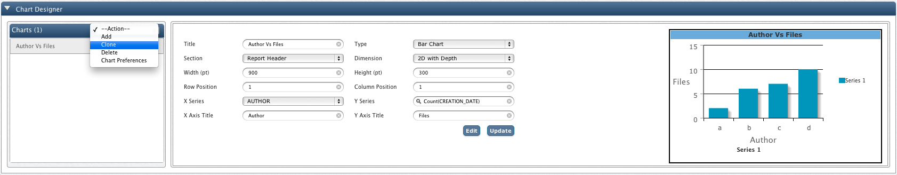

Hadoop Chart Designer
In this chapter
This chapter explains about creating charts from the results of executed queries.
Introduction
Graphic visual representations of information, data or knowledge presents complex information clearly and effectively.
They can improve your understanding of your organizational data by utilizing graphics to enhance the your ability to see patterns and trends.
Graphical Representations makes it easy to understand and interpret data at a glance and also helps to do comparisons among many things. Moreover, it makes data easy to recall.
QueryIO helps you to use charts to obtain graphical representation of your query result. Chart designer is used to create charts that will be displayed with result of query viewed in query viewer.
Chart Designer

Add Chart
- To add a chart, select Add action from the dropdown at the top of charts tab.
-
Select the type of the chart that you want to design from the Chart Type dropdown box.
-
Select the section of the report where you want to place your chart Section dropdown box.
You can place your charts in report header, group header or group footer sections.
- You can create 2D and 3D charts by changing the Dimension property of the charts.
- If you want to add multiple charts to the same section, then you can specify custom layout for those charts by specifying custom
values for the Row Position and Column Position properties.
- Click Add once you have configured all the chart related properties.
Clone Chart
- Use this action to create exact copy of the selected chart.
Delete Chart
- Use this action to delete selected chart.
Chart Preferences
QueryIO provides you highly customized your charts and make them the way you want them to look. This feature drastically improves overall report.
- Use Chart Preference action to define global chart settings which will be applied to all the charts added after chart preferences are saved.
- To define preference settings for individual charts, select the chart, and click Edit or click on the chart preview shown.
Chart Preference UI is divided into three sections :
- First section shows the configurable categories.
- Next section displays live preview of the chart. Any update in the properties are instantly reflected to the preview.
- Next section displays all the configurable properties that can be applied on the chart, according to selected category.
Chart Preferences include following configurable property categories
- Chart Area : This section deals with the overall area of the chart like background colors, outside border etc.
- Title : This category deals with chart title related properties.
- Leader Lines : These properties are applicable only for pie charts. This section contains properties related to leader lines of the pie chart.
- X-Axis : Here you can update properties related to X-Axis labels like position above or below, colors, borders etc.
- Y-Axis : Here you can update properties related to Y-Axis labels like position left or right, colors, borders etc.
- Labels : This properties are related to data labels that shows the exact value of the quantity in chart.
- Legend : This section deals with the properties related to legend table like table position : left or right,table anchor: top, middle or bottom, borders, colors etc.
Note : For global chart preferences, all categories are shown and preview contains pie chart and line chart.
For individual chart preferences, categories not applicable on respective chart are not displayed and preview contains selected chart type.
Copyright © 2015 QueryIO Corporation. All Rights Reserved.
QueryIO, "Big Data Intelligence" and the QueryIO Logo are trademarks
of QueryIO Corporation. Apache, Hadoop and HDFS are trademarks of The Apache Software Foundation.